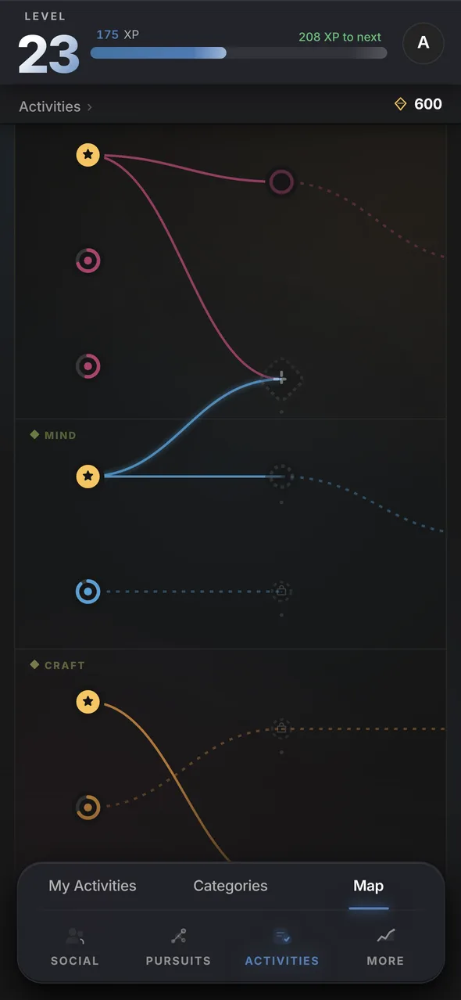
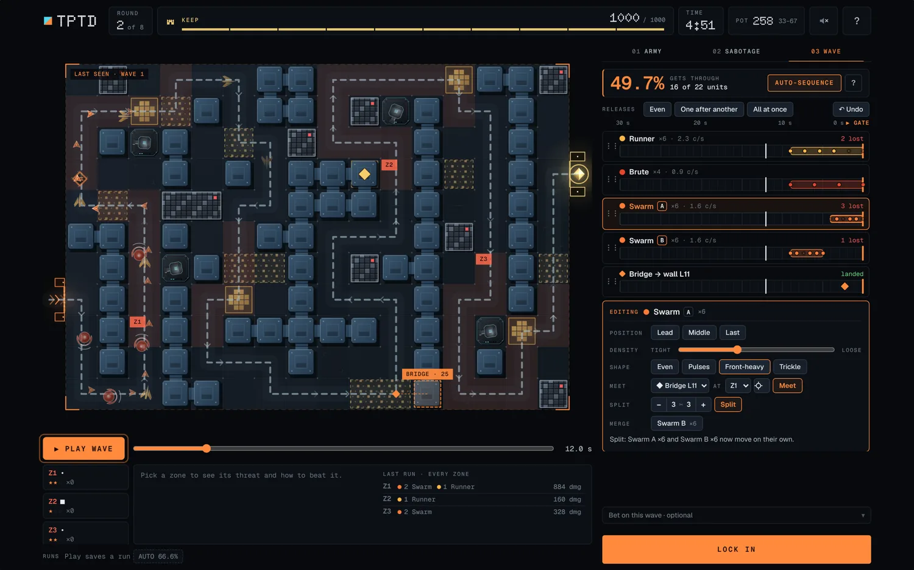

I.
Mindkraft
A life-gamification app where an AI weaves your goals into a map built from habits you already keep, and nothing is added without your yes.1
≈₹2per AI query on Claude Haiku
26weekly actives from 50 sign-ups

I own two products end to end: a live habit app with two shipped AI features, and a two-player strategy game that went through 25 builds in five weeks. These are the notes on how they were framed, decided, specced, shipped and measured, including what broke.
A life-gamification app where an AI weaves your goals into a map built from habits you already keep, and nothing is added without your yes.1

A two-player tower defence game. One side times an army, the other builds a maze, both plan at once. Every balance change waited on bot simulations.

1 Built with Claude Code. I own the problem, the decisions, the specs and the quality bar; I don’t write the code.